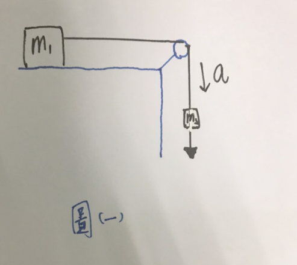
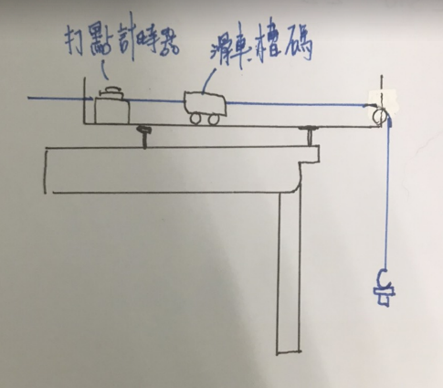
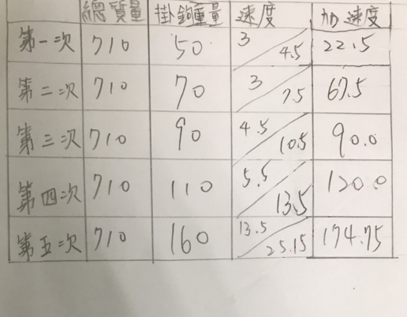
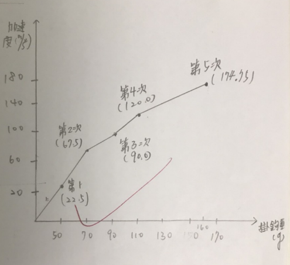

第二運動定律
實驗器材:
1.滑車 2.軌道
3.打點計時器 4.砝碼
實驗目的:
探求力、加速度與質量間的關係來驗證牛頓第二運動定律。
實驗原理:
1.物體受外力作用時，其運動狀態依據第二牛頓運動定律[F = MA]。
(一)若物體質量一定，則加速度與外力成正比。
(二)若物體受力一定，則加速度的大小與物體質量成反比。
2.如下圖左，m1及m2受m2g的作用而坐等加速度運動。m2g = (m1+m2)g
(一)當我們改變m2，但使m1+m2為定值時，便可得物體質量一定，而外力改變的情況。
(二)若使m2g不變，僅改變m1+m2，便可的定力作用下，質量與加速度的關係。
實驗步驟:
[實驗前]
將滑車與軌道安裝於桌面上，紙帶的一端穿過打點計時器，繫在滑車尾端。調整軌道的底座螺絲，
使尚未懸掛槽碼掛鉤的滑車，在軌道上可作等速度運動。
[實驗I]
1.在滑車上放置數個槽馬，且在掛勾處放置100g的槽馬，啟動打點計時器，利用紙帶上的點求出加速度，
可得拉動連結體的外力為m2g。
2.將滑車處的槽碼移至掛勾處，重複此步驟，並每次紀錄加速度和掛勾質量。
3.劃出m2g和a的關係圖。
[實驗II]
1.在掛勾處放200g槽碼*1，測量其加速度，並記錄總質量。
2.將槽馬逐次放在滑車上，每次測量加速度，並記錄總質量。
3.劃出加速度與總質量倒數的圖。


實驗數據及圖片:

